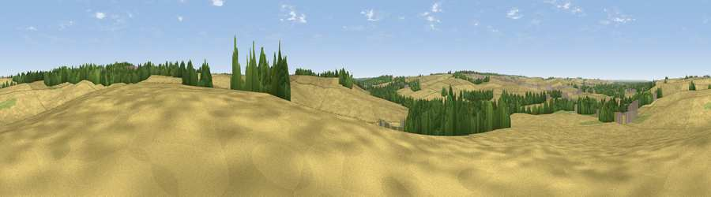

Viewpoint near Little Chesterford
#43679 in England · top 62% of its area beats it · near Little ChesterfordWhere it is
The exact computed spot (TL 52325 41475). Click the marker for map links.
The view, rendered

A 360° render of this exact spot computed from the terrain model, tree cover and land cover — summer colours, afternoon light, calibrated against photographs of famous viewpoints. Real trees, hedges and buildings will differ in detail.
The panorama
Grey silhouette: terrain skyline in each direction (720 bearings, Earth curvature and refraction included). Dashed green: skyline with trees (+15 m) and buildings (+8 m) as obstacles. Blue strip: how far the ground is visible on each bearing.
Where the view opens
Wedge length = distance to the farthest visible ground on that bearing (vegetation-aware). Rings at 10, 25 and 50 km.
What fills the view
76% cropland · 12% grassland · 11% woodland · 2% built-up
Angular shares of the visible panorama (visual magnitude), not map area. Landscape diversity 0.34 (0–1 Shannon).
Key numbers
More beautiful places nearby
The staircase of upgrades: each row has a higher view potential than everything closer. Driving times are estimates from straight-line distance, calibrated against real road routing — check an actual route before setting out.
| Place | Direction | Drive | Score |
|---|---|---|---|
| Heavy Hill | WSW · 2 km | ~6 min | 29.2 |
| Viewpoint near Ickleton | WNW · 3 km | ~7 min | 33.0 |
| Pepperton Hill | WNW · 6 km | ~13 min | 44.0 |
| Viewpoint near Linton | NE · 8 km | ~16 min | 48.0 |
| Viewpoint near Heydon | W · 10 km | ~19 min | 50.0 |
| Viewpoint near Stapleford | NNW · 12 km | ~22 min | 54.8 |
| Viewpoint near Royston | W · 18 km | ~31 min | 56.6 |
| Viewpoint near Hexton | WSW · 41 km | ~61 min | 65.4 |
52.05073, 0.22002 · source: screening · position refined by local search. Computed location — check access rights before visiting.